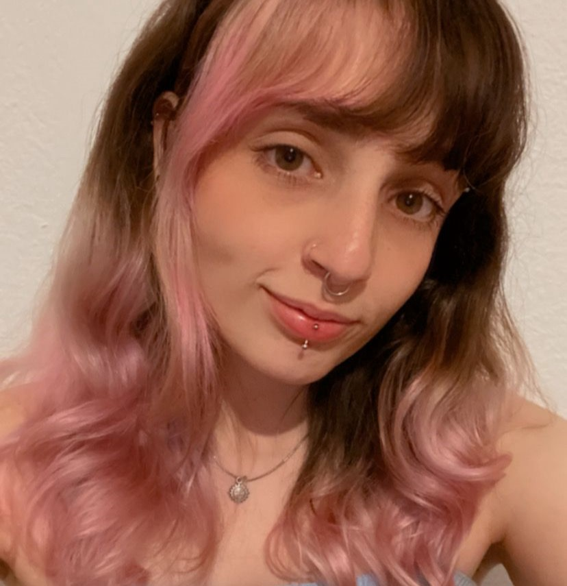

Sabrina Cubo
Atualmente, estou no primeiro semeste da faculdade de Web Design, embora ainda não possua formação acadêmica na área, sinto-me motivada por essa disciplina. Antes de ingressar na faculdade de Web Design, cursei 4 semestres de Arquiteturaa apesar de ter apreciado a experiência, percebi que não me via atuando profissionalmente nessa área, foi então que decidi mudar de curso e seguir algo novo o design digital e a criação de interfaces web. Mesmo ainda no início de minha jornada acadêmica tenho dedicado tempo e esforço para me aprimorar. Tenho consciência de que ainda há muito a aprender, mas estou determinada a me tornar uma profissional qualificada e competente nesta área.
Voltar pagina